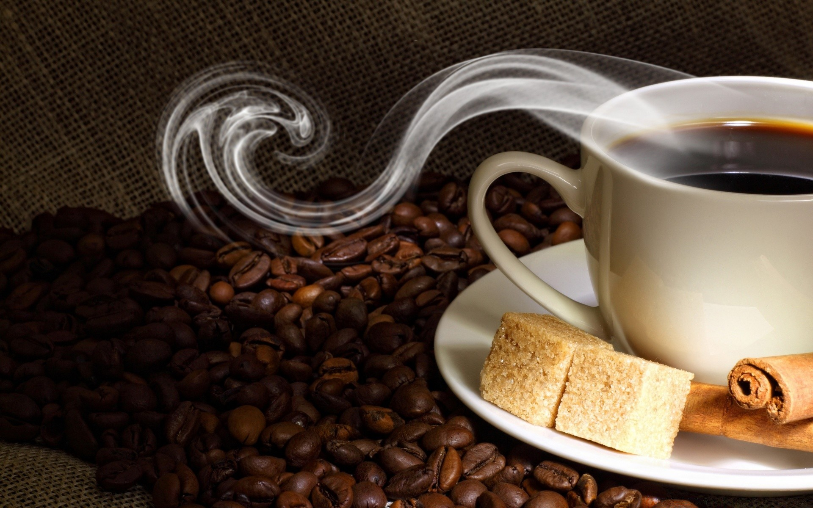
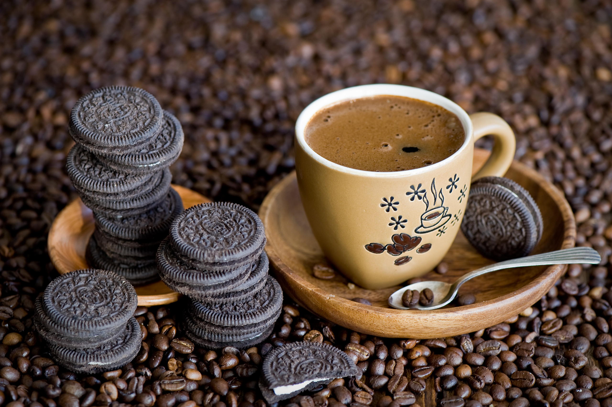

>

Открытие кофе относится приблизительно к 850 г. н. э., но полное признание его пришло много веков спустя. Первоначально в качестве тонизирующего средства употреблялся не отвар обжаренных зёрен, а непосредственно сырые кофейные ягоды. Чуть позже в Йемене начали готовить напиток из зрелой высушенной мякоти кофейного плода, получая напиток — «гешир» (он же кишр) — так называемый «белый йеменский кофе».
В 1706 году голландские колонисты прислали саженец кофейного дерева в ботанический сад Амстердама. Через несколько лет саженец дерева был подарен королю Франции. Французский моряк Габриэль-Матьё де Кльё похитил черенки и семена кофейного дерева из королевской оранжереи и привез их на о. Мартиника, где основал первую кофейную плантацию[13]. Растения кофе хорошо прижились в теплом климате и плантации быстро распространились по всей Южной Америке: в 1727 году закладываются
Производство кофе в 2017 году составило 9,56 млн тонн, из них 3,16 млн тонн пришлось на
Бразилию, 1,77 млн тонн на
Вьетнам, 840 тысяч тонн на Колумбию, 654 тысячи тонн на Индонезию, 459 тысяч тонн на Эфиопию, 462 тысячи тонн на
Гондурас, 350 тысяч тонн на Индию[18].
Около трети кофе потребляется в странах-производителях, в частности в Бразилии (1,32 млн тонн), Индонезии (282 тысячи
тонн). Крупнейшими потребителями-импортёрами кофе является Евросоюз (2,5 млн тонн, в первую очередь Германия, Италия,
Франция), США (1,57 млн тонн), Япония (465 тысяч тонн), Россия (271 тысяча тонн), Канада (227 тысяч тонн), Республика
Корея (140 тысяч тонн), Алжир (133 тысячи тонн), Австралия (110 тысяч тонн), Саудовская Аравия (86 тысяч тонн),
Турция
(83 тысячи тонн), Украина (67 тысяч тонн)[19].
Большое значение на рынке кофе играют реэкспортёры, страны, закупающие сырьё у стран-производителей и
перерабатывающие
его (обжарка, перемалывание, переработка в растворимый кофе, расфасовка для розничной торговли) для последующего
экспорта. Более двух третей реэкспорта приходится на Евросоюз, в первую очередь Германия (720 тысяч тонн), Бельгия
(255
тысяч тонн), Италия (190 тысяч тонн), Нидерланды (107 тысяч тонн), Испания (98 тысяч тонн), Польша (97 тысяч тонн).
Другие крупные реэкспортёры: США (176 тысяч тонн), Швейцария (112 тысяч тонн), Малайзия (94 тысячи тонн), КНР (85
тысяч
тонн), Канада (75 тысяч тонн), Россия (57 тысяч тонн)[20][21].
Международный рынок кофе в 2017 году оценивался в 30,4 млрд долл.[22] Крупнейшими экспортерами Кофе, в суммовом
выражении, являются Бразилия ($4,86 млрд долл.), Вьетнам ($3,08 млрд долл.), Колумбия ($2,7 млрд долл.), Германия
($2,25
млрд долл.) и Швейцария ($1,74 млрд долл.), а импортерами — США ($6,03 млрд долл.), Германия ($3,5 млрд долл.),
Франция
($1,94 млрд долл.) и Италия ($1,78 млрд долл.).
Сначала в рассаднике, где обеспечивается нужное количество солнечного света и тени, сажают специально выведенные
семена.
Примерно через полгода сеянцы пересаживают на поле, почва которого подготовлена для них с помощью удобрений. Кофейные
сеянцы сажаются рядами, расстояние между которыми делается с расчётом ухода за саженцами и землёй, а также для уборки
урожая.
Плодоносят растения только при круглогодичном уходе, в который входят прополка сорняков и регулярная обработка
деревьев
фунгицидами, инсектицидами, нематоцидами с целью защитить их от вредителей и болезней, таких, как бобовый
сверлильщик,
кофейная ржавчина («ройя», вызываемая грибком Hemileia vastatrix Berk. et Br.), Охо-де-гайо («глаз петуха»,
вызываемая
грибком Mycena citricolor), нематода и т. д.
Срок жизни кофейного дерева составляет 60—70 лет. Плодоносить молодое растение начинает не раньше, чем через два
года; в
год с одного кофейного дерева можно получить примерно 1-1,5 тысячи ягод. Кофе лучше собирать вручную, снимая только
спелые ягоды одну за другой; именно так и делается в Колумбии, Коста-Рике и других странах, когда компании специально
нанимают сезонных рабочих.
Собранные вручную ягоды обычно подвергаются обработке влажным способом. Они помещаются в протирочную машину, которая
снимает с семян большую часть мякоти. Затем семена на один-три дня кладутся в баки, где под действием энзимов,
возникающих естественным путём, оставшаяся мякоть разлагается в процессе ферментации. После этого семена промывают,
удаляя последние остатки мякоти. Часть из них сушат под солнцем на бетонных террасах или сушильных столах, а часть —
пропуская через сушилки с горячим воздухом. Вслед за этим механически удаляются покрывающие семена слои сухой кожицы,
которая состоит из пергаментной и серебристой оболочек. Ферментация, которая осуществляется при обработке влажным
способом, наряду с использованием только полностью созревших ягод позволяет получать мягкий кофе отличного качества.
В Бразилии, главной стране по производству кофе, на плантациях чаще всего применяется уборочный метод, известный как
derriça. Кофе собирают вручную, снимая с ветвей все до единой ягоды, независимо от степени их спелости. Недавно на
некоторых плантациях для улучшения качества продукции и повышения производительности труда стали переходить на
механизированные и полумеханизированные методы уборки. При одном из них используется ручной пневматический
инструмент,
трясущий ветви, в результате чего ягоды падают на землю.
Упавшие плоды собирают граблями и, чтобы удалить листья, грязь и палочки, просеивают. Затем кофейные ягоды
складываются
в большие 60-литровые корзины. Просеянные ягоды моют в бетонном корыте или в специально предназначенной для этого
машине. Во время мойки спелые плоды отделяются от старых сухих, которые начали гнить.
Вымытый кофе раскладывают на большой бетонной террасе для просушивания на солнце в течение 15—20 дней. В это время,
чтобы зёрна просохли как следует, их переворачивают примерно каждые 20 минут. Иногда, чтобы они высохли скорее,
используются механические сушилки. Необходимо следить за содержанием в зёрнах влаги, иначе они могут пересохнуть,
отчего
станут хрупкими и начнут ломаться — а из-за этого снизится их ценность. Когда достигнута идеальная влажность — между
11
и 12 процентами, — зёрна механически очищаются от шелухи. Затем их раскладывают в мешки и отправляют на предприятия,
где
его классифицируют и подвергают дальнейшей обработке.
Робуста

Робуста. Второй по популярности вид кофе. Растёт на равнине или небольшой высоте над уровнем моря. Деревья робусты менее подвержены болезням и вредителям. Это более дешёвый вид кофе, он не обладает таким ярким вкусом, как арабика. За робустой ухаживают не так тщательно, как за дорогой арабикой, это тоже влияет на вкус. В чашке робуста, в отличие от арабики, не даёт фруктового, ягодного или цветочного вкуса, в ней преобладают земляные, хлебные, древесные оттенки, кислотности практически нет. Содержание кофеина в робусте, приблизительно 2,5% , в арабике 1,3%. 21 Про кофе и жизнь 87 подписчиков Что такое робуста и зачем её добавляют в кофе 23 мая 2019 6,3 тыс. дочитываний 1,5 мин. 7,9 тыс. просмотров. Уникальные посетители страницы. 6,3 тыс. дочитываний, 80%. Пользователи, дочитавшие до конца. 1,5 мин. Среднее время дочитывания публикации. В Мире культивируется всего два вида кофе — Арабика и Робуста. Арабика - более дорогой и самый популярный вид кофе, растёт в горной местности обладает ярким вкусом, содержит меньше кофеина. Но вместе с тем, арабика более подвержена болезням и требует большего ухода как за самими деревьями так за ягодами и зёрнами. Робуста. Второй по популярности вид кофе. Растёт на равнине или небольшой высоте над уровнем моря. Деревья робусты менее подвержены болезням и вредителям. Это более дешёвый вид кофе, он не обладает таким ярким вкусом, как арабика. За робустой ухаживают не так тщательно, как за дорогой арабикой, это тоже влияет на вкус. В чашке робуста, в отличие от арабики, не даёт фруктового, ягодного или цветочного вкуса, в ней преобладают земляные, хлебные, древесные оттенки, кислотности практически нет. Содержание кофеина в робусте, приблизительно 2,5% , в арабике 1,3%. Что лучше, арабика или робуста? Трактор нельзя сравнивать со спортивной машиной, точно так же нельзя сравнивать робусту с арабикой, это два совершенно разных вида кофе.
Классификация зелёных зёрен:
- виду кофейных зёрен (арабика, робуста),
- региону произрастания,
- способу обработки,
- размеру,
- количеству дефектных зёрен,
- количеству посторонних примесей,
- влажности.